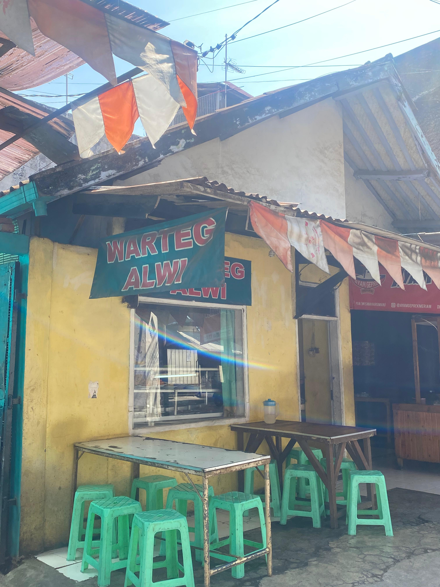
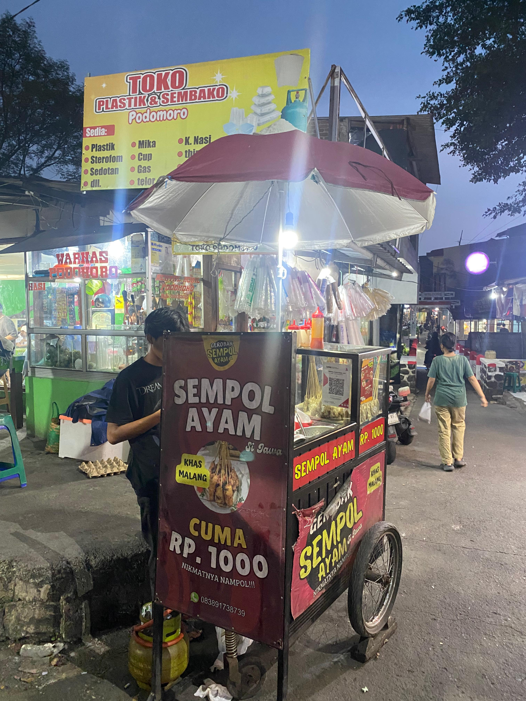
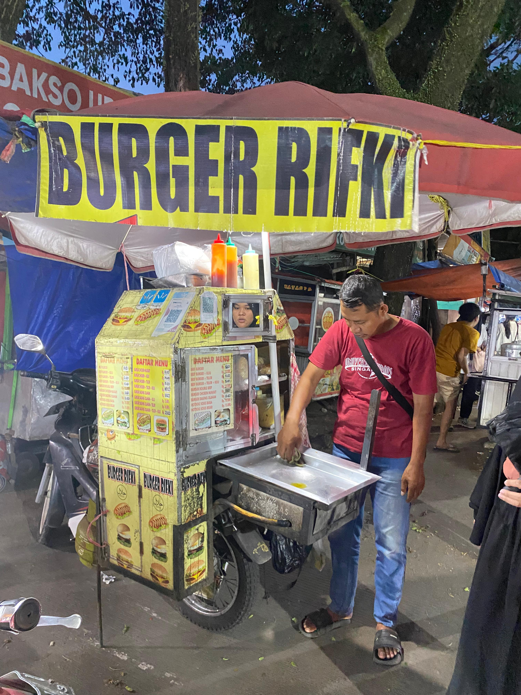
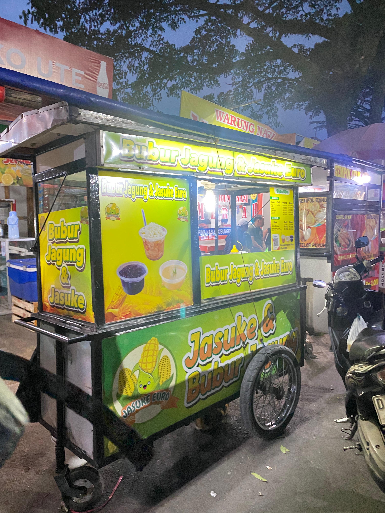
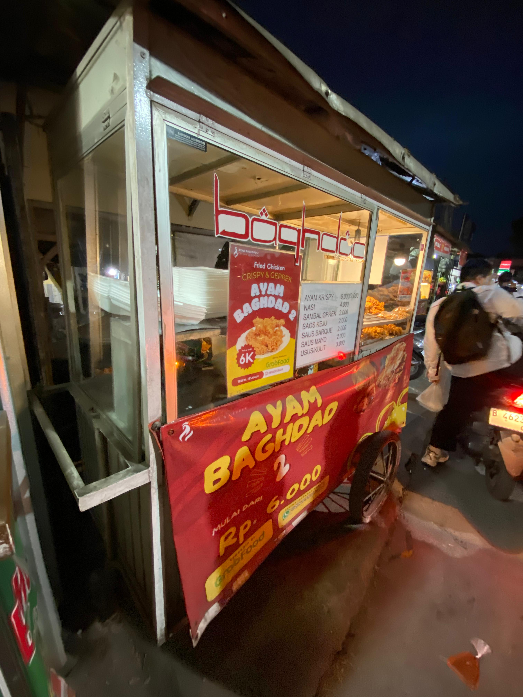
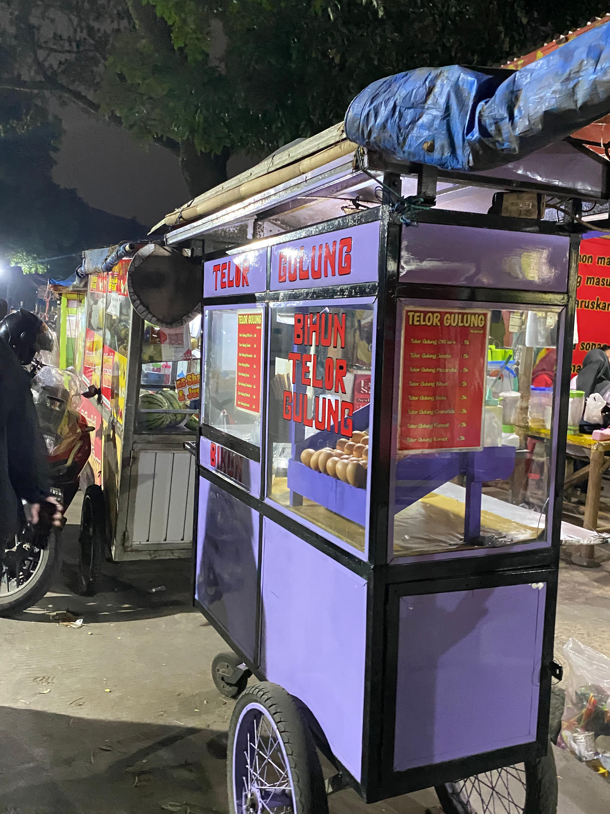
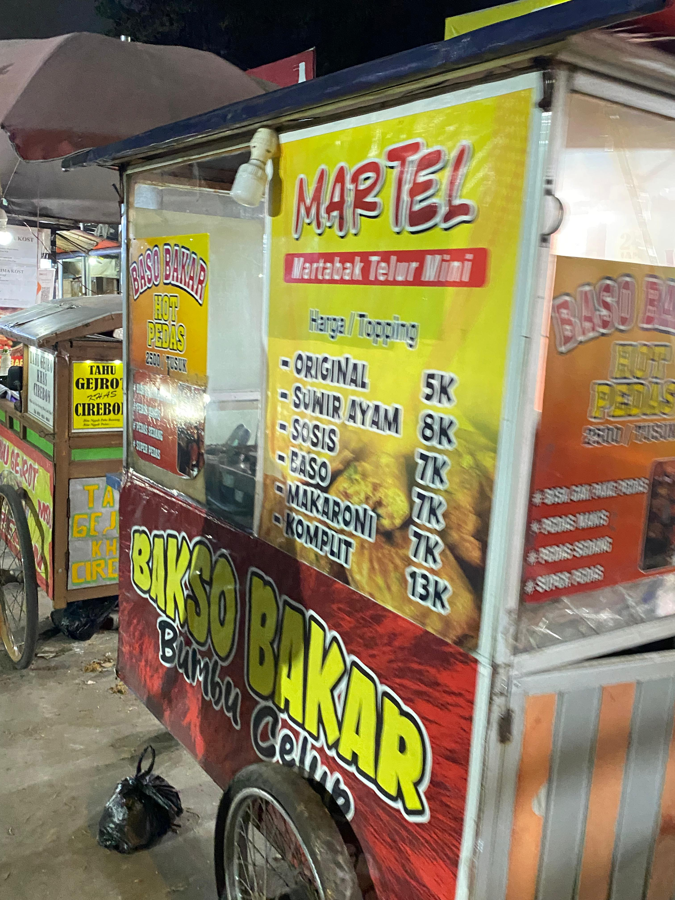
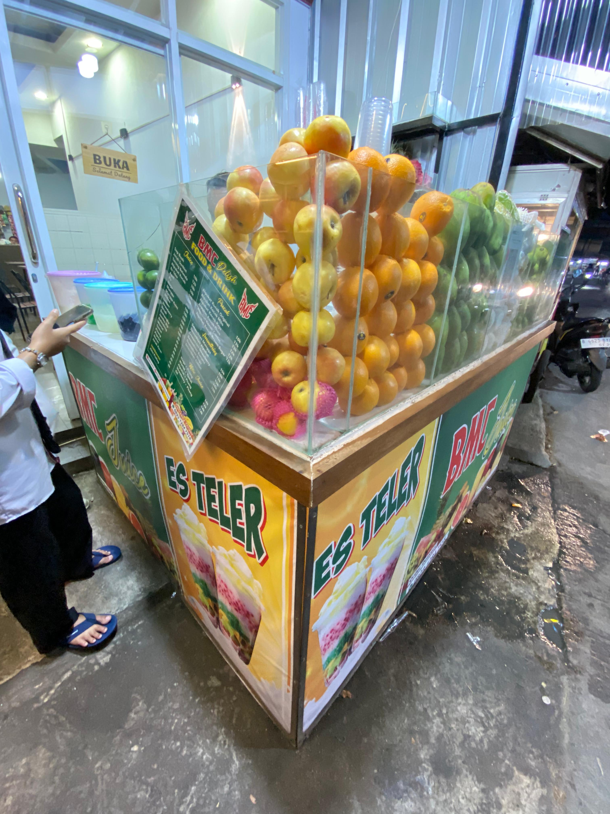

Mahasiswa baru sering bingung mencari tempat makan terjangkau di sekitar kampus. Berikut rekomendasi kuliner enak dan murah sekitar Telkom University Bandung.
1. Warteg Alwi
Harga seporsi mulai Rp8.000,-. Lauk bisa dipilih sesuai selera.
Lokasi: Jl. Telekomunikasi No.1, Dayeuhkolot
Jam:
06.30 - 21.00 WIB
2. Sempol Ayam
Cemilan daging ayam goreng tusuk, harga Rp1.000,- per tusuk.
Lokasi: Depan gate 3 Telkom University
3. Burger Rifki
Burger murah meriah dengan rasa nikmat.
Lokasi: Depan gate 3 Telkom University
4. Jasuke & Bubur Jagung
Jagung manis dengan susu & keju, atau bubur jagung santan. Harga Rp10.000,- per porsi.
Lokasi: Depan gate 3 Telkom University
5. Ayam Baghdad
Ayam goreng tepung jumbo gurih, Rp6.000,- per potong.
Lokasi: Depan gate 3 Telkom University
6. Bakso Ikan Bagja

Bakso ikan tenggiri kenyal, Rp5.000,- per porsi.
Lokasi: Depan gate 3 Telkom University
7. Telor Gulung
Jajanan telur goreng gulung, Rp5.000,- per porsi.
Lokasi: Depan gate 3 Telkom University
8. Bakso Bakar
Bakso bakar bumbu kacang, Rp10.000,- per porsi.
Lokasi: Depan gate 3 Telkom University
9. Banana Nugget

Pisang goreng crispy dengan topping, Rp13.000,- per porsi.
Lokasi: Depan gate 3 Telkom University
10. BMC Juice
Aneka jus segar, bisa delivery.
Lokasi: Depan gate 3 Telkom University
Penutup
Itulah beberapa rekomendasi kuliner murah sekitar Telkom University Bandung. Selamat mencoba!